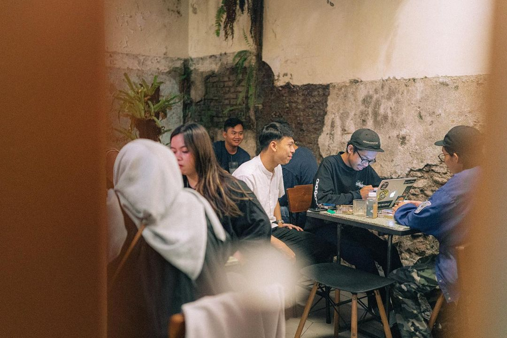
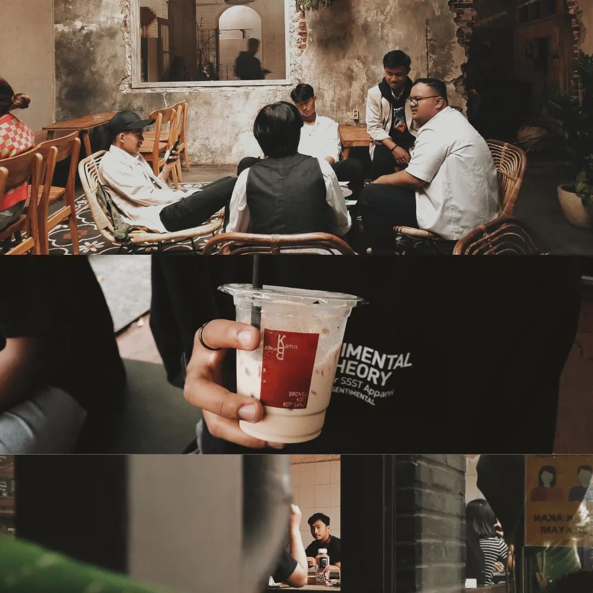
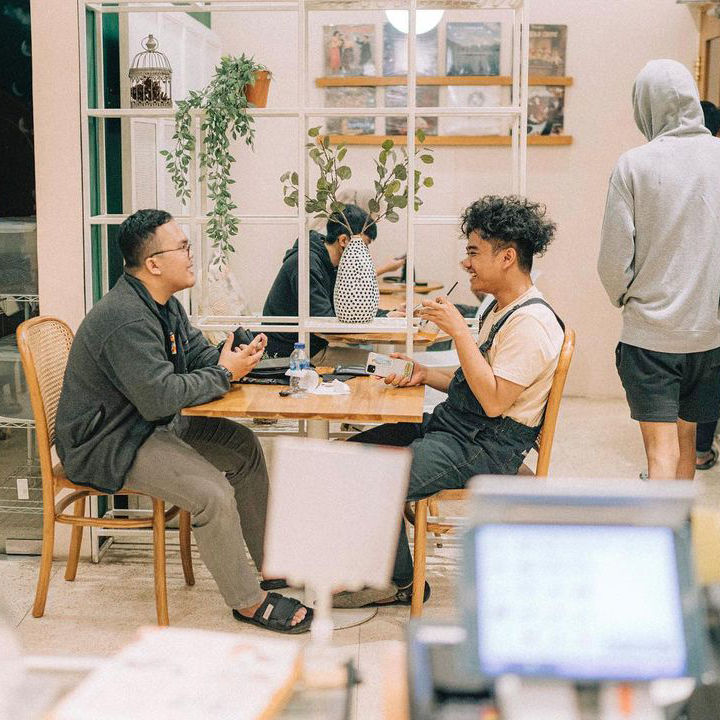
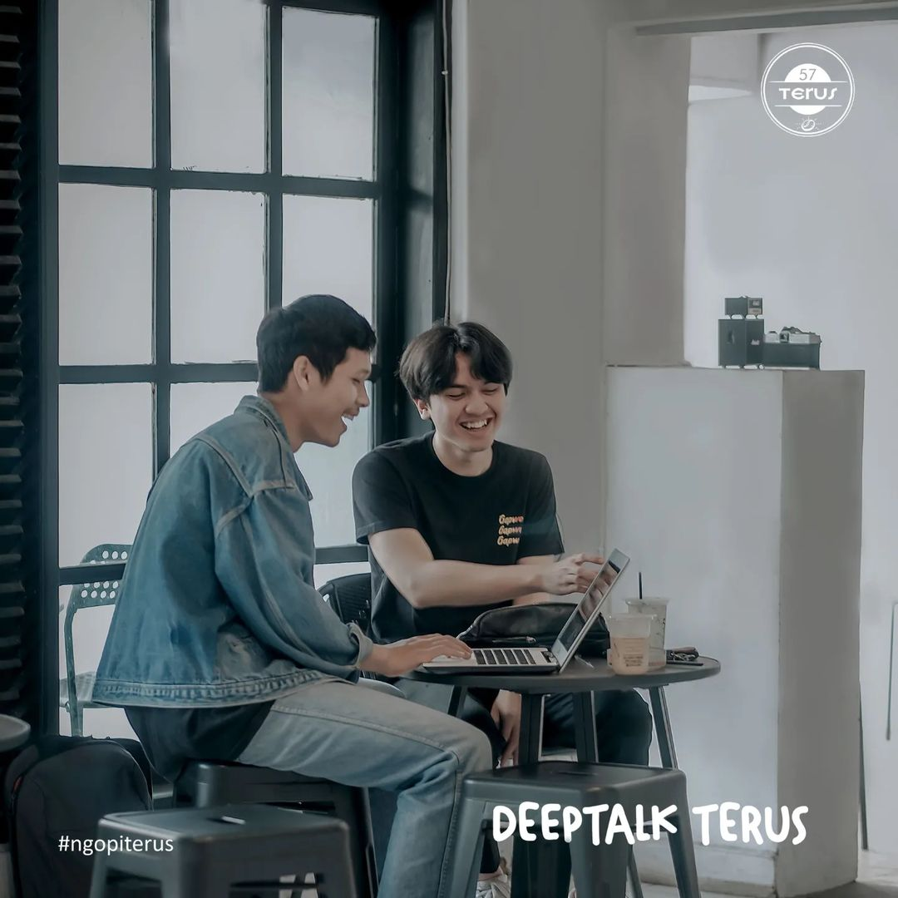

Seputar Tempat Ngopi dan Nongki Recommended di Garut
Ngopi dan Nongki
Ngopi sudah bukan lagi sekedar minum kopi, tetapi sudah menjadi rutinitas bagi kaum milenial.
Yang namanya ngopi pasti tak luput dari nongkrong atau biasa disebut "nongki".
Zaman sekarang, orang - orang mencari sebuah tempat yang bagus atau tempat-tempat yang instagramable untuk berfoto dan mempostingnya di media sosial, mereka lebih mementingkan tempat yang bagus dan unik ketimbang rasa minuman kopinya.
Karena mereka mencari tempat yang nyaman untuk berdiskusi, bekerja atau sekedar nongkrong. Berikut adalah rekomendasi 3 tempat ngopi yang ada di Garut.


Gudang Rasa
Gudang Rasa merupakan salah satu kafe bernuansa klasik. Dinding batu-bata yang dicat warna putih membuat suasana seperti di rumah jadul. Atap kayu dan beberapa sudut bangunan yang dibuat seolah rapuh membawa aroma klasik makin kental.
Kafe ini memiliki hari spesial yaitu "Kamis Bahagia", di mana harga setiap menu kopi menjadi Rp.10.000. Oleh karena itu, biasanya pada hari Kamis kafe ini selalu penuh pengunjung.

Dua Warna Coffee
Dua Warna Coffee merupakan salah satu tempat ngopi favorit di Garut. Tampilan dari luarnya tidak seperti kedai kopi, namun tempat ini merupakan tempat ngopi yang cozy dan instagrammable.
Harga menu di sini terjangkau dengan rasa makanan dan minuman mantap. Pelayanan staff-nya juga sangat ramah dan cepat.
Rekomendasi menu di sini adalah Cafe Latte, Black Summer, dan Mocktail-nya juga mantap.

57 Terus Coffee
57 Terus Coffee atau lebih sering disebut "maju terus" merupakan kedai kopi yang sering digandrungi banyak pengunjung akhir-akhir ini.
Banyak pilihan menu kopi yang ditawarkan mulai dari latte, manual brew, hingga menu non-coffee lainnya. Tempatnya nyaman untuk pemuda-pemuda yang sering nongkrong. Selain harga menunya yang bersahabat, terdapat gitar yang dapat dimainkan oleh pengunjung.